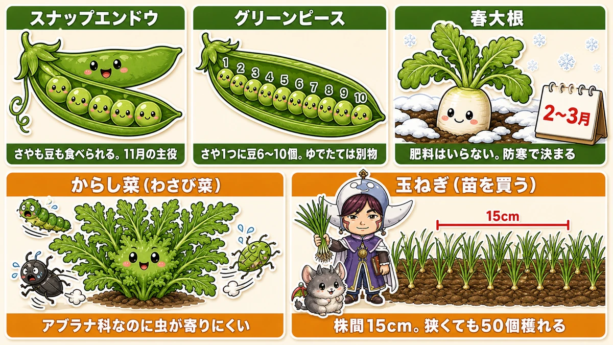
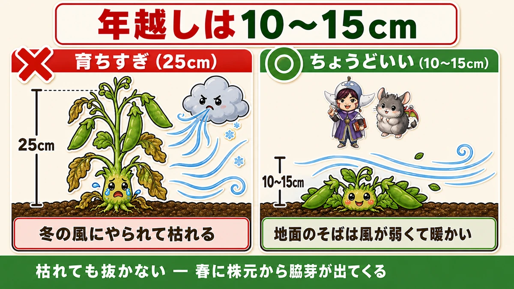
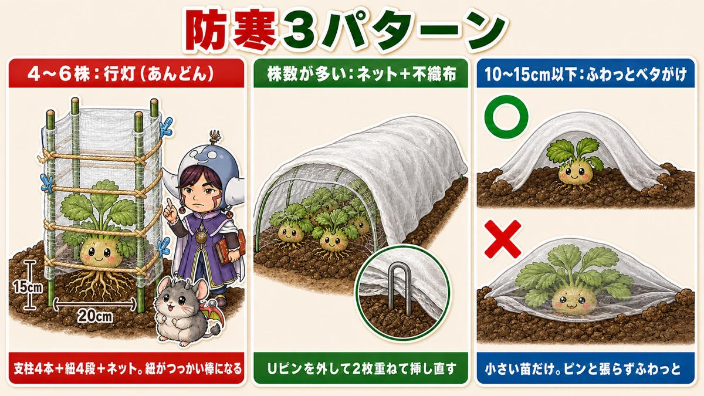
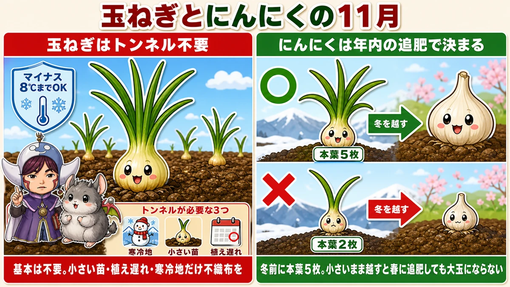
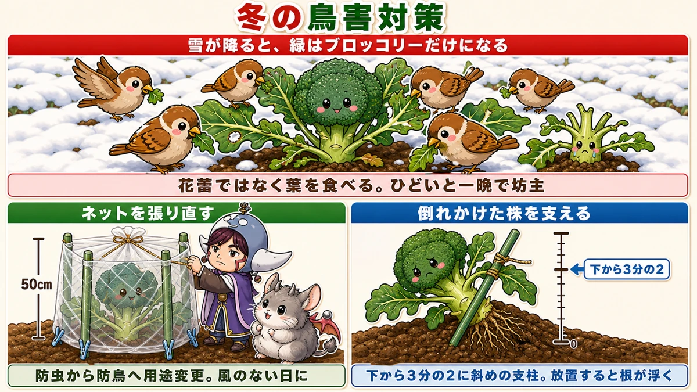

【11月にまく・植える野菜】冬を越せるのは「小さい株」です🍂

🗨️「11月って、もう何も植えられないよね？」
🗨️「スナップエンドウ、順調に伸びてるから安心」
🗨️「冬に畑がまるごと鳥に食べられた」
どうも、8150（えいこう）です🌱 家庭菜園歴8年、理科の教員免許を持っていて、有機・無農薬で野菜を育てています。
毎月お届けしている「今月なにをまく・植えるか」の定期便、11月号です。
先に、この記事でいちばん言いたいことを言っておきますね。
冬を越せるのは、大きく育った株ではなく、小さい株です。
これ、直感と逆だと思います。私も最初はそうでした。スナップエンドウが元気にぐんぐん伸びているのを見て、「今年はうまくいってる」と喜んでいたら、年が明けてから見事に枯れました。
隣の畝で、まだひょろっとしていた遅まきの株のほうが、生き残ったんです。
11月は、まく月であると同時に、そういう「守り方」を決める月です。今日はそこを中心にお話しします☺️
※以下の時期は中間地（関東〜関西の平野部）が目安。寒い地域は少し早め、暖かい地域は少し遅らせて。タネ袋の裏の時期も必ずチェック✨️
📖 この記事の目次
今月の畑は、こんな状態
11月は、春に収穫する野菜の植え付け時期です。
ただし後半になると初霜が降りて、環境が一気に厳しくなります。同じ11月でも、上旬と下旬ではまるで別の月だと思ってください。
- 上旬 … まだ昼間は暖かい日があります。直まきでも意外にうまくいきます
- 中旬以降 … 直まきはきびしくなってくるので、苗を買うほうが確実です
ホームセンターに苗が並び始めるのも中旬ごろ。ここは無理せず、買う判断をしていい時期です。
★植える場所は「跡地」を使ってください
11月にいちばん困るのが、土づくりの時間がないことです。
肥料は土の中で分解されてから効きます。それに2週間以上かかる。今から肥料を入れて、分解を待って、それから植える。もう間に合いませんよね。
そこで使うのが、跡地です。
9月に植えて、いま収穫期を迎えている野菜。そこを少し早めに片づけて、そのまま次を植える。前の野菜のために入れた肥料が残っているので、あらためて施肥しなくていいんです。
- そろそろ限界を迎えているナスの跡
- 9月に植えた大根の跡
- 9月にまいた水菜の跡
このあたりが狙い目です。「まだ穫れるけど、そろそろかな」というくらいで見切りをつけるのが、11月のコツですね。
11月に植える・まく5つ

①スナップエンドウ
11月の主役です。
さやえんどうのおいしいさやの中に、グリーンピースのような甘い豆が入っている。両方いっぺんに味わえる、いいとこ取りの野菜です。しかも実がたくさんつきます。
買うと高いんですよね、スナップエンドウ。でも自分で作ると、食べきれないくらい穫れます。
唯一にして最大の難点が、冬越しが必要なこと。そこは次の章でみっちりお話しします。
②グリーンピース
スナップエンドウの陰に隠れがちですが、私はこれをもっと作ってほしいと思っています。
グリーンピースって、シュウマイやチャーハンの上に乗っているあの緑の粒、というイメージの方が多いんじゃないでしょうか。冷凍のあれです。
ゆでたてのグリーンピースは、まったくの別物です。
香りがあって、豆そのものが甘い。スナップエンドウの倍くらいある大きなさやを開けると、中に豆が6〜10個ぎっしり詰まっています。あれを開ける瞬間が、けっこう楽しいんですよ。
11月にまいて、収穫は6月ごろ。栽培期間が長いのが難点ですが、病害虫の心配はほとんどありません。穫れたらまず塩ゆで、それから豆ごはん。これは本当におすすめです。
③春大根
大根の第3ラウンドです。
9月にまくのが年内どり、10月にまくのが年越しどり、そして11月にまくのが春どり。同じ大根なのに、まく月で三度楽しめる野菜なんですね。
- 品種は「三太郎」が定番で無難です
- 収穫は2〜3月
- ★肥料はいりません
そして春大根で成否を分けるのは、防寒対策です。暖かくしてあげれば、どんどん育ちます。逆に何もしないと、ほとんど大きくなりません。ここは資材をケチらないほうがいいところです。
④からし菜（わさび菜）
これは知る人ぞ知る、無農薬向きの葉物です。
からし菜はアブラナ科なのですが、★アブラナ科の中では群を抜いて虫が寄りつきません。あの辛味成分のおかげですね。防虫ネットの手間をかけたくない方には、これ以上ない選択肢だと思います。
そして面白いのが味の変化です。
暖かい時期に作ると、ただ辛いだけ。でも寒い時期に作ると、辛味の中に甘みが乗ってきます。
おすすめは「わさび菜」。名前のとおり、わさびのような風味のからし菜です。サラダに入れると、それだけで一皿の主役になります。収穫は2〜3月ごろ。
ちなみに、中華料理でおなじみのザーサイもこの仲間なんですよ。
⑤玉ねぎ（苗を買って植える）
11月の玉ねぎは、タネからではなく苗を買って植えます。
- 株間は15cm。びっしり植えられます
- 小さな面積でも50個くらい穫れます
- 収穫は6月中頃
株間15cmというのが玉ねぎのいいところで、面積あたりの収穫数がとても多い。1畳ぶんの畝があれば、家族の1年分がだいたい賄えます。
玉ねぎの詳しい植え方は、以前に一本まるごと書いています。苗選びのところがいちばん大事なので、これから買う方はそちらもぜひ。
★冬を越せるのは「小さい株」です

ここからが今月の本題です。
スナップエンドウとそら豆について、はっきりした数字があります。
12月末の時点で、高さ10〜15cm。これが理想です。
それより大きく育ってしまった株は、12月から2月にかけて、ほぼ枯れます。
なぜ大きいと枯れるのか
意外に思われるかもしれませんが、スナップエンドウもそら豆も、寒さそのものには結構強いんです。
弱いのは、冷たい風です。
背が高く育った株は、風にまともに当たります。しかも茎が伸びて柔らかい部分が増えている。そこがやられる。
背が低い株は、地面のすぐ上にいるので風をよけられます。地面は空気より冷えにくいので、そこにへばりついているほうが安全なんですね。
だから11月に「よく育っているな」と喜ぶのは、実は危険信号です。今の私は、伸びすぎている株を見ると逆に不安になります。
★もう伸びてしまった場合
「うちのはもう20cm超えてる…」という方も大丈夫です。手はあります。
- 摘心する … 先端を摘んで、これ以上伸びないようにします
- そのまま守る … 次の章の防寒でしのぎます
そして、いちばんお伝えしたいのがこれです。
枯れても、諦めないでください。
長く伸びた茎が寒さで枯れても、根が生きていれば、株元から新しい脇芽が出てきます。それを育てればちゃんと収穫できます。
上が茶色く枯れた姿を見ると「今年はもうダメだ」と抜きたくなりますが、そこで抜かないでください。春になってから、下から出てきますから。
買い直すという選択肢も
11月中旬ごろから、ホームセンターにスナップエンドウとそら豆の苗が並びます。
タネまきが遅れた方、失敗した方は、素直に苗を買っていいと思います。ちょうど適期サイズの苗が売られているので、むしろ確実です。
家庭菜園は意地を張るところではないので、使えるものは使いましょう😊
防寒は、株数で選ぶ3パターン

防寒のやり方はいくつもありますが、迷ったら「何株あるか」で選んでください。
パターン1：4〜6株 → 行灯（あんどん）を作る
株数が少ないなら、これがいちばんしっかり守れます。
- 150cmの支柱を4本用意する
- 株元から20cm離した四隅に、垂直に立てる。風で倒れないよう、しっかり押し込む
- 地面から15cmのところで、四隅を囲むように紐を張って結ぶ（1段目）
- さらに15〜30cm間隔で、2段目・3段目・4段目と張る
- 防虫ネットを周りに巻いて、洗濯バサミで留める
紐は結び方にこだわらなくて大丈夫です。ほどけなければ何でもいいです。
この紐が地味に効きます。あとで株が伸びてきたときに、つっかい棒の役目をして、外側へベタッと倒れるのを防いでくれるんですね。防寒だけでなく、支柱としても働いてくれる。
特に冷え込む日は、この上から不織布をかけると万全です。
パターン2：株数が多い → ネットの上に不織布を重ねる
★いちばん効率がいいのがこれです。
すでに防虫ネットのトンネルをしているなら、その上から不織布をかぶせるだけ。新しく支柱を立てる必要がありません。
固定にコツがあります。下の防虫ネットを留めているUピンを一度外して、ネットと不織布を2枚重ねてから挿し直す。こうするとピンが増えず、きれいに留まります。
パターン3：苗が10〜15cm以下 → 不織布を直接ベタがけ
小さい苗なら、これがいちばん簡単です。不織布を上から直接かけて、Uピンで留めるだけ。
ただし条件があります。
★小さい苗のときだけです。大きくなった株にベタがけすると、布の重みで押されて傷みます。
そしてもうひとつ。★ピンと張らず、ふわっとかけてください。株が伸びる余裕を残しておく感じですね。
どのパターンでも、期間の目安は12月の終わりから2月いっぱいです。
すでに植えたものの、11月のお世話

玉ねぎ ー 実は、放っておいても大丈夫な株が多い
玉ねぎの生育適温は15〜20℃。25℃を超えると生育が止まります。
そして寒さについては、意外と強いんです。★生育初期なら、マイナス8℃くらいまで耐えます。
なので基本的に、玉ねぎにトンネルは不要です。
トンネルをしたほうがいいのは、この3つに当てはまる方だけ。
- 最低気温がマイナスになる地域にお住まいの方
- ★小さい苗を植えた方
- ★植えるのが遅れた方
理由は霜柱です。小さい苗や根がまだ張っていない苗は、霜柱に持ち上げられて浮いてしまいます。浮いた苗は風で倒れ、根がむき出しになって枯れます。
資材はこう選んでください。
- 不織布 … ★光も雨も通し、換気がいりません。冬の強い風もある程度抑えてくれます。いちばん手軽
- 寒冷紗・防虫ネット … そこまで寒くない地域ならこれで十分
- ビニール … 寒い地域向き。ただし★必ず換気が必要です。晴れた日に閉め切ると蒸れます
「かけっぱなしでいい」というのは、忙しい方にとって想像以上に大きなメリットです。私は不織布派ですね。
にんにく ー ★年内の追肥で大玉が決まります
にんにくの追肥は、11〜12月と2〜3月の2回です。
そして、11〜12月のほうが大事です。
なぜかというと、こういう仕組みだからです。
★本格的な寒さが来る前に、本葉5枚くらいの大きさにしておく。ここまで育っていないと、春にどれだけ追肥しても大玉になりません。
冬の間、にんにくは地上部をほとんど伸ばしません。つまり冬に入る時点の体の大きさが、春のスタートラインになる。ここで小さいと、最後まで小さいままなんですね。
だから、植えるのが遅れた方や、生育が遅れている方ほど、年内の追肥が効きます。
- 追肥の前に草取りを。草があると追肥しづらいし、生育も落ちます
- ★鶏ふんはリン酸が多く、にんにくと相性がいいです。粉状よりペレット状のほうが断然まきやすい。ぼかし肥でもOK
- 株元に軽く1つまみずつ、マルチの穴に入れる。面積が広いなら上からパラパラでも大丈夫
- 余裕があれば追肥のあと、株元に土を入れる
生育がかなり遅れている株には、追肥に加えて不織布のトンネルをかけてあげてください。
★雪の日、鳥がやってきます

これ、経験するまで信じられない話だと思います。
ブロッコリーやカリフラワーが大きくなってくると、防虫ネットに収まらなくなりますよね。虫ももう減っている。だから外そうかな、と思う。
そこで外すと、冬に大変なことになります。
何が起きるか
12月から1月、特に雪が降った後です。
畑が一面真っ白になると、鳥にとって食べ物が消えます。そんな中で、雪の上にひとつだけ緑色が突き出している。ブロッコリーの葉です。
鳥は集団でやってきます。そして★花蕾（食べる部分）ではなく、葉を食べます。ひどいときは一晩で坊主です。
葉を全部食べられた株は、光合成ができないので、その後まったく育ちません。せっかくここまで育てたのに、収穫直前で終わります。
だから、ネットは「用途を変えて」張り直す
防虫ネットを外すのではなく、防鳥＋防寒のために張り直す。これが11月にやっておく仕事です。
- 50cmの支柱を4本、株を中心にして四隅に差す（2株以上なら中間にも足す）
- 防虫ネットを周りに巻きつける
- 下のほうから洗濯バサミで留めていく
- 上はネットをたぐり寄せて、紐で縛る
★風のない日にやってください。風がある日は本当に作業になりません。何度もネットを持っていかれて、心が折れます。
その前に、倒れかけた株を起こす
ネットを張る前に、もうひとつ。
秋の風で傾いてしまった株はありませんか。あれ、放っておくと危険です。さらに強い風が吹いたときに、根が浮いたり茎が折れたりします。
- 無理のない範囲で株を起こす
- 支柱を斜めに差して支える。★株の下から3分の2くらいのところに当てる
- 紐で結ぶ。きつく縛らず、少し余裕を持たせる
これはネットを張らない方にも、ぜひやっておいてほしい作業です。
ちなみに茎ブロッコリーを育てている方は、この時期に頂花蕾（てっぺんの、直径4cmくらいのかたまり）を切ってください。そうすると脇芽がどんどん出てきます。茎ブロッコリーで食べるのは、その脇芽のほうですからね。
11月にやってはいけないこと3つ
①肥料を入れて、すぐタネをまく
分解に2週間以上かかります。寒くなるとさらに遅くなり、分解しきっていない肥料が障害を起こすことがあります。
11月は、跡地を使って肥料なしでまき、あとから生育を見て追肥する。これが正解です。
②防虫ネットをすぐ外す
葉がつっかえてきても、外さないでください。虫はまだ活動していますし、このあと鳥が来ます。
外すのではなく、緩めるか、支柱を足して高さを稼いでください。
③結球中の下葉を取る
キャベツや白菜の下葉が地面についていると気になりますが、成長段階の外葉は結球のために働いています。ここで取ると巻きません。
取っていいのは、完全に黄色くなった葉だけです。
おまけ：11月中旬までに穫っておくもの
- 大根 … 冬を越すとスが入って味が落ちます。11月〜12月初旬がベスト
- 玉レタス … 固く結球したら早めに。遅れると軟腐病やアブラムシが出ます
- 里芋・さつまいも … ★霜が降りる前に。当たると傷んで収穫できなくなります
学ぶ：なぜ、小さい株のほうが冬に強いのか🔬
理科の時間です。この記事の「小さいほど強い」を、もう一歩深めます。
まず、植物が冬に枯れる原因は、思っているのと少し違います。
凍って死ぬより、乾いて死ぬほうが多いんです。
冬の風は、とても乾いています。その風が当たると、葉から水分がどんどん奪われます。ところが土は冷たく、根は水を吸う力が落ちている。出ていく一方で、入ってこない。
これが、冬に植物が枯れる主な理由です。だから防寒より「防風」のほうが効く。行灯を作って風を止めるのが、実は理にかなっているんですね。
では、なぜ小さい株のほうが強いのでしょうか。
理由は2つあります。
ひとつは、風です。背が低ければ、地面のすぐ上にいることになります。地面のそばは風が弱く、しかも土が昼間に受けた熱を少しずつ放しているので、空気より暖かい。小さい株は、いちばん条件のいい場所にしゃがんでいるわけです。
もうひとつは、細胞の中身です。
植物は寒さに当たると、細胞の中のデンプンを糖に変えてためこみます。砂糖水が水より凍りにくいのと同じで、糖が濃いほど凍りにくくなる。いわば、自分で不凍液を作っているんですね。
そして、ゆっくり育った小さく締まった株ほど、この糖の濃度が高くなります。逆に、急いで大きくなった株は水っぽくて、凍りやすい。
ここで、面白いことがつながります。
冬の野菜が甘くなるのは、この不凍液のせいなんです。
ほうれん草を収穫の1週間前に寒さに当てると甘くなるのも、からし菜が冬になると辛味の中に甘みを持つのも、全部これ。野菜は自分が凍らないために糖をためていて、人間はそれを「おいしい」と言って食べているわけです。
お子さんと一緒なら、同じ野菜を「トンネルの中」と「外」で育てて、食べ比べてみてください。外で寒さに当たったほうが甘い。生き延びるための工夫を、そのまま味わえます😊
まとめ
ここまで読んでくださって、ありがとうございます！
11月は、まく月であり、守り方を決める月です。ポイントを整理しておきますね。
- ★スナップエンドウとそら豆は、12月末に高さ10〜15cmが理想。大きく育った株ほど枯れる
- 伸びすぎたら摘心。★枯れても抜かない。株元から脇芽が出てくる
- 防寒は株数で選ぶ。4〜6株なら行灯、多いならネットの上に不織布、小さい苗ならふわっとベタがけ
- 植える場所は跡地を使う。肥料を入れる時間はもうない
- ★にんにくは年内の追肥が勝負。本葉5枚で冬に入れないと大玉にならない
- 玉ねぎは基本トンネル不要。小さい苗・植え遅れ・寒冷地だけ不織布を
- ★防虫ネットは外さず、防鳥に用途変更。雪の日にブロッコリーの葉が集団で食べられます
全部やろうとしなくて大丈夫です。まずは畑に出て、スナップエンドウの背丈を測ってみてください。10〜15cmなら、そのまま冬へ。伸びすぎていたら、今日のうちに先を摘む。それだけで来年の6月が変わります🍂
次回は、寒くなってからが本番の話。冬の畑で野菜が甘くなるしくみと、その甘さを引き出す穫り方をお話しします🥬
スナップエンドウのタネ（つるなしホルンスナック）
11月の主役です。つるなしなので支柱4本で済み、草丈1mほど。子どもと一緒に穫れる高さなのがうれしいところです。年末に10〜15cmを目指してまいてください。
![[商品価格に関しましては、リンクが作成された時点と現時点で情報が変更されている場合がございます。]](https://hbb.afl.rakuten.co.jp/hgb/552615f0.9cc2855e.552615f1.776f7de9/?me_id=1251188&item_id=10000610&pc=https%3A%2F%2Fthumbnail.image.rakuten.co.jp%2F%400_mall%2Fyonezawa%2Fcabinet%2Ftane01%2F10mame%2Fhorunsnack.jpg%3F_ex%3D240x240&s=240x240&t=picttext "[商品価格に関しましては、リンクが作成された時点と現時点で情報が変更されている場合がございます。]")

そら豆のタネ（駒栄）
秋まき用。11月はじめまでにまいて、小さいまま冬へ。玉ねぎと隣り合わせに植えると、春にお互いを助け合います。
![[商品価格に関しましては、リンクが作成された時点と現時点で情報が変更されている場合がございます。]](https://hbb.afl.rakuten.co.jp/hgb/56d217e1.4eab06f8.56d217e2.1513a8ec/?me_id=1204270&item_id=10005616&pc=https%3A%2F%2Fthumbnail.image.rakuten.co.jp%2F%400_mall%2Fnikkoseed%2Fcabinet%2Fseeds%2Fssk%2Fsskv1088h4701.jpg%3F_ex%3D240x240&s=240x240&t=picttext "[商品価格に関しましては、リンクが作成された時点と現時点で情報が変更されている場合がございます。]")
玉ねぎ苗（中晩生 ネオアース）
11月は苗を買って植える月です。株間15cmでびっしり植えられるので、狭い畑でも50個以上穫れます。中晩生は保存がきくのがありがたいです。
![[商品価格に関しましては、リンクが作成された時点と現時点で情報が変更されている場合がございます。]](https://hbb.afl.rakuten.co.jp/hgb/56d218b8.a80573a6.56d218b9.1d398fba/?me_id=1241438&item_id=10055324&pc=https%3A%2F%2Fthumbnail.image.rakuten.co.jp%2F%400_mall%2Fnogyoya%2Fcabinet%2F03498327%2Fimg60507283.jpg%3F_ex%3D240x240&s=240x240&t=picttext "[商品価格に関しましては、リンクが作成された時点と現時点で情報が変更されている場合がございます。]")
不織布
防寒の3パターンすべてで使います。換気がいらないので、かけっぱなしにできるのがいちばんの利点。玉ねぎにも豆にも、これ1つで足ります。
![[商品価格に関しましては、リンクが作成された時点と現時点で情報が変更されている場合がございます。]](https://hbb.afl.rakuten.co.jp/hgb/56bc237a.e97551b1.56bc237b.2513ed10/?me_id=1310260&item_id=10000879&pc=https%3A%2F%2Fthumbnail.image.rakuten.co.jp%2F%400_mall%2Fdiokasei%2Fcabinet%2F007fusyokufu%2F12g%2Fimgrc0092049705.jpg%3F_ex%3D240x240&s=240x240&t=picttext "[商品価格に関しましては、リンクが作成された時点と現時点で情報が変更されている場合がございます。]")
支柱（150cm）
行灯（あんどん）を作るのに、株を囲んで4本立てます。紐を4段張れば、防寒と支柱を兼ねてくれます。
![[商品価格に関しましては、リンクが作成された時点と現時点で情報が変更されている場合がございます。]](https://hbb.afl.rakuten.co.jp/hgb/56d221a0.da732c49.56d221a1.b57a6709/?me_id=1230952&item_id=10017113&pc=https%3A%2F%2Fthumbnail.image.rakuten.co.jp%2F%400_mall%2Fnou-nou%2Fcabinet%2F5010356000109-01.jpg%3F_ex%3D240x240&s=240x240&t=picttext "[商品価格に関しましては、リンクが作成された時点と現時点で情報が変更されている場合がございます。]")
炭化鶏ふん
にんにくの年内追肥に使います。鶏ふんはリン酸が多くてにんにくと相性がよく、これが冬前の本葉5枚を作ります。粒状なのでまきやすいです。
![[商品価格に関しましては、リンクが作成された時点と現時点で情報が変更されている場合がございます。]](https://hbb.afl.rakuten.co.jp/hgb/55e7612a.7de1526b.55e7612b.01a50904/?me_id=1214866&item_id=10002182&pc=https%3A%2F%2Fthumbnail.image.rakuten.co.jp%2F%400_mall%2Fkaju%2Fcabinet%2F00714580%2F03462454%2F07486601%2Fimgrc0071643813.jpg%3F_ex%3D240x240&s=240x240&t=picttext "[商品価格に関しましては、リンクが作成された時点と現時点で情報が変更されている場合がございます。]")